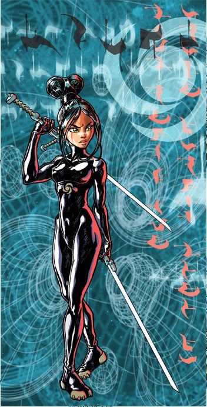

Navis
Je me suis amusée à décliner mon premier projet sur Illustrator
sous forme de tee-shirt et de poster.


Notre premier projet sur Illustrator consistait à reproduire l'image de Navis.
J'ai souhaité ajouter une touche de créativité sur cet exercice.
Je me suis inspirée du personnage de Lux dans le jeux vidéo League of Legend pour reproduire l'image de la navis.

